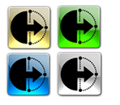
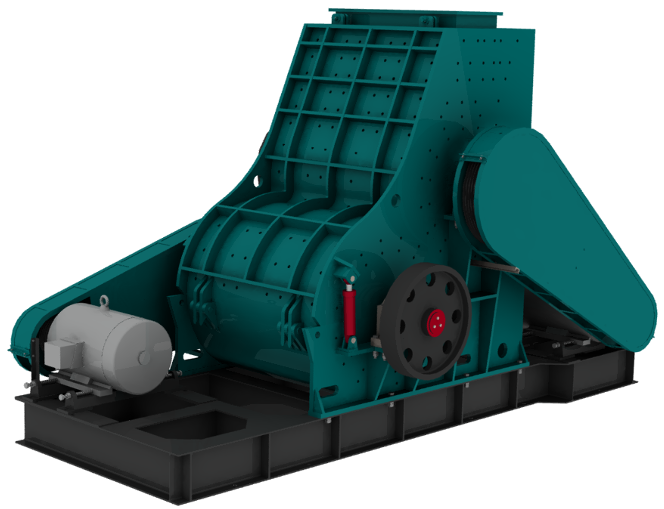
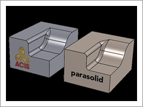

Amerikan IronCAD LLC firmasýnýn tasarým çözümleri programý olan IRONCAD, içerdiði modüllerle 3B ve 2B tasarým olanaklarýný tek bir yazýlýmda birleþtirmiþtir. Amerika, Japonya, Almanya, Fransa gibi dünyanýn geliþmiþ ülkelerinde sýnýfýnýn marka deðeri ve bilinirliði en yüksek CAD yazýlýmý olan IRONCAD; entegre 3B - 2B tasarým ortamlarý, yüksek performansý, esnekliði ve saðladýðý iþbirliði ile tasarýmdan satýþa uzanan süreçte pek çok sorunun çözülebilmesini saðlýyor. Modelleme, teknik çizim, görselleþtirme ve montajý içeren modüllerinin yanýnda güçlü dönüþtürücüsü IRONCAD TRANS ile pek çok farklý formattaki veriler üzerinde de çalýþma imkaný saðlamakta.
 |
IRONCAD – Veri Oluþturma: Tasarýmcý ve mühendislerin fikirlerini geliþtirmeleri, ürünleri oluþturmalarý, mühendislik tasarýmlarýmý detaylandýrmalarý, teknik çizimler ve iþlerini sunmalarý için kapsamlý bir 2B & 3B araç. |
 |
INOVATE – 3B Ýþbirliði: Mühendislerin fikirlerini geliþtirmeleri ve 3B verilerini paylaþmalarý için bir 3B araç. |
|
IRONCAD DRAFT – Teknik Resim: Teknik ressamlara doðru bir þekilde detaylandýrma ve iþlerini dökümante etme imkaný veren, 3B verilerden de faydalanabilen güçlü bir 2B makina mühendisliði çizim aracý. |
|
IRONCAD COMPOSE – Fikirlerin Paylaþýmý: Satýþ ekibi ve müþterilerin montajý yapýlandýrýp yeni fikirleri paylaþabildiði, standart parça ve elemanlarý kullanabildiði benzersiz bir yapýlandýrma aracý. COMPOSE modülü tamamen ücretsiz. |
|  |
IRONCAD TRANS – Eriþimi Geniþletme: Kullanýcýlara müþteriler ve tedarik zincirleriyle veri paylaþýmý ve daha yakýn çalýþma imkaný sunan bir format dönüþtürücüsü seti. |
Sadece 3B modellemeye olanak saðlayan INOVATE ve benzersiz bir entegre 3B - 2B tasarým ortamýna sahip IRONCAD olmak üzere iki farklý paket halinde bulunmakta.
IRONCAD’in en önemli özellikleri ve farklýlýklarý arasýnda Triball, Tutamak Teknolojisi/Intellishape, Sürükle-Býrak, Zengin Kütüphaneler, Yüksek Render ve Animasyon Kalitesi, Dual Kernel teknolojisi sayýlabilir.
IRONCAD’de oluþturulan bütün 3B nesneler Intellishape olarak adlandýrýlan bir özelliðe sahipler. Bu durumdaki nesne ve yüzeyler üzerlerinde bulunan tutamaklar çekilerek kolayca þekillendirilebilir/boyutlandýrýlabilir. Tasarým geçmiþinden baðýmsýz deðiþiklikler yapýlmasýna imkan saðlayan bu özellik, sürecin kýsalmasýnda önemli rol oynuyor.
Sürükle-Býrak özelliði sayesinde zengin þekil ve parça kütüphanelerinden alýnan nesneler 3B çizim ortamýna býrakýlarak esnek ve dinamik bir þekilde model oluþturulabiliyor. Tasarýma alýþýldýk þekilde 2B baþlama imkaný vermesinin dýþýnda, geleneksel yaklaþýmýn aksine 2B bir taslak olmaksýzýn tasarýma baþlama imkaný IRONCAD’i rakiplerinden ayýran en büyük özellik denebilir.
IRONCAD’in patentli Triball aracý nesne ve montajlarý hýzlý ve kolay bir þekilde konumlandýrmanýzý saðlýyor.
Özellikle tanýtým ve sunumlarda büyük önem taþýyan görselleþtirme, ürünü imal etmeden son halde ve fotogerçekçi bir biçimde görme imkaný saðlar. Diðer modelleme programlarýnda olduðu gibi IRONCAD’de de Render ve animasyon kalitesi oldukça yüksek;

Dual Kernel teknolojisi sayesinde ACIS ve Parasolid gibi lider iki modelleme motorunu ayný anda kullanabiliyorsunuz;

IRONCAD’in Yenilikçi Tasarým Metodunun tasarým geçmiþi tabanlý geleneksel yöntemi kullanan Solidworks karþýsýnda ne kadar güçlü olduðunu görmek için aþaðýdaki videoyu izleyin;
Datakey Biliþim hakkýnda:
2006 yýlýndan beri biliþim sektöründe faaliyet gösteren ortaklarýmýz tarafýndan 2012 yýlýnda kurulan Datakey Biliþim, uzman kadrosu ve müþteri memnuniyetini ön planda tutan kaliteli hizmet anlayýþý ile daima daha iyisini baþarmýþtýr. Son olarak ürün portföyüne kattýðý IronCAD ile CAD sektörünün müþteri memnuniyeti en yüksek lideri olmayý hedeflemektedir.
DataKey Biliþim ve Danýþmanlýk Hizmetleri Ltd. Þti.
Cumhuriyet Mh. Libadiye Cd. No:61 K:1
Üsküdar Ýstanbul
Tel : (216) 521 10 70
www.ironcad-turkey.com |